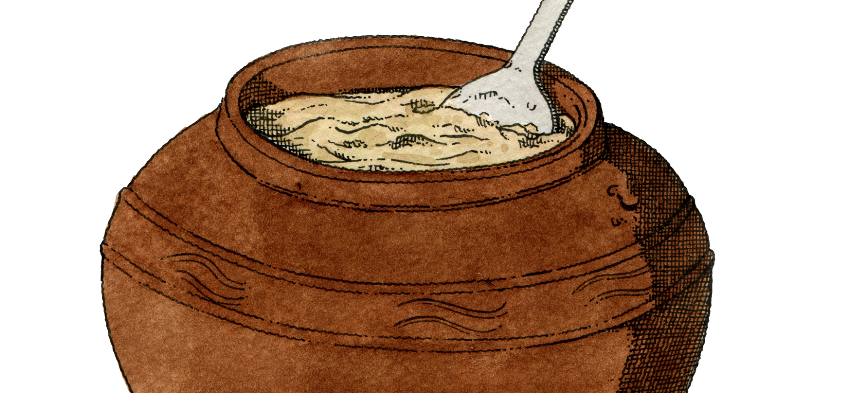

Home
Dooboo-jang

Description
Tofu, or dubu in Korean, is a food made by curdling fresh soya milk and pressing it into a solid block. Nutritionally, tofu is low in calories and relatively high in protein. During the fermentation process you can see a change in colour and taste. Once fermented, this tasty, soft and savoury tofu is a perfect replacement for cheese.
Ingredients
- 500g firm dooboo (firm tofu)
- 1 Tbsp Korean fermented soy sauce
- ½ Tbsp salt
- 5 Tbsp doenjang (soybean paste, optional)
- Large tupperware container or sterilised jar
- Cheesecloth
Steps
- Carefully remove the tofu block from its package and drain the water.
- Gently mash the tofu with your hands, making sure that all big lumps have been removed.
- TAdd soy sauce and salt to the mashed tofu. Mix and mash it together evenly.
- Put the mashed tofu in a container and drape the cheesecloth over it. If you have doenjang, place it on top of the cloth, making sure the tofu has no contact with the air. Close the lid and store it at room temperature.
- Ferment at room temperature for a week. If refrigerated, tofu-jang is edible for up to 5 months. Leave doenjang in the container during refrigeration and remove before eating.
Recipe by Venerable Jeong Kwan
The Venerable Jeong Kwan is a Buddhist nun, selected as one of the Plant-forward Global 50 by Eat Forum and Culinary Institute of America, and known as ‘The Philosopher Chef’ by the New York Times. She has made influential insights into the field of Buddhist temple cooking methods, particularly those focused on the future of sustainable eating practices.
Illustration source: @thibaudherem